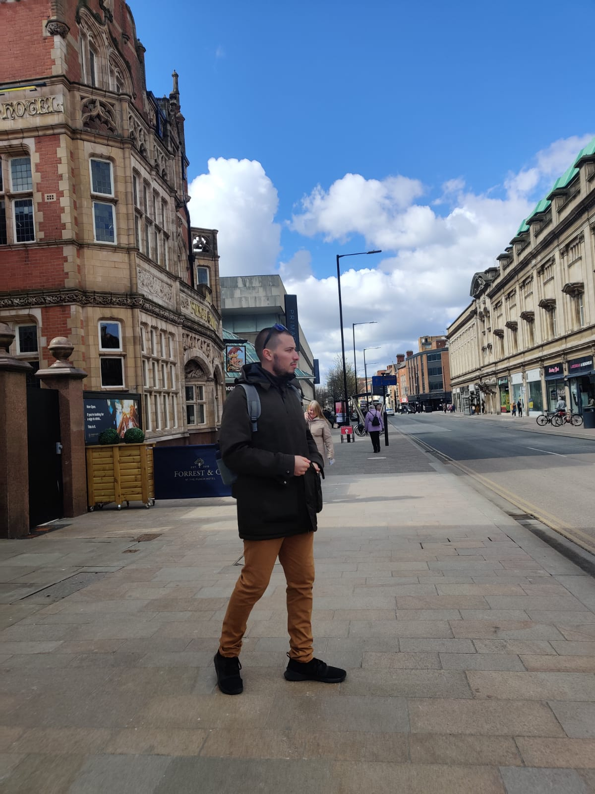
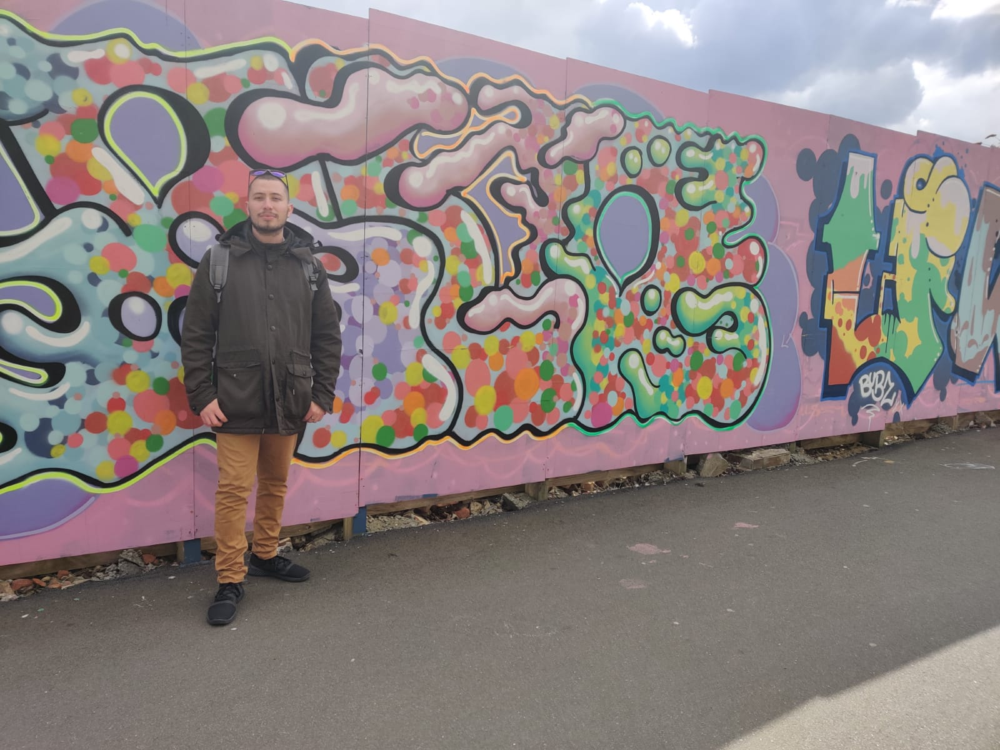

Ver mapa más grande
Princes Quay in Princes Dock and City Hall.

LM frowning at something in front of City Hall.
Hull Waterside and Marina.
Joyce and LM💕
Hull Minister, Anglican Church.
Immigrants statue by Neil Hadlock.
Queen Gardens.

LM in front of a graffiti.
Trinity Market Arcade.